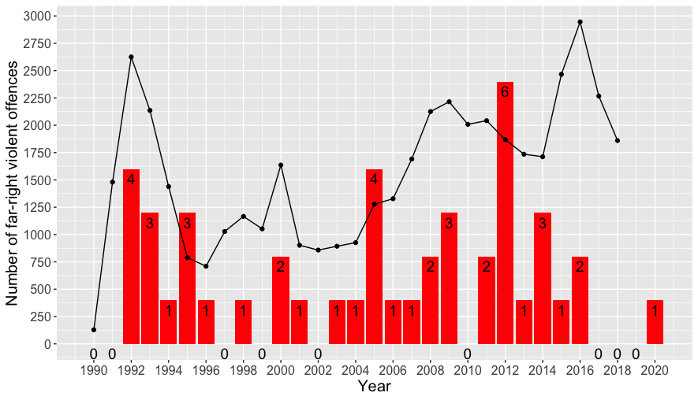

![]()
On June 2, 2019, a far-right extremist with longstanding ties to far-right organisation Combat 18, itself long monitored by German security services, and other far-right movement organisations—shot and killed the district president of Kassel, Walter Lübcke. On October 9, 2019, another far-right figure attempted to carry out a mass shooting at a synagogue in the Saxony-Anhalt city of Halle, killing two individuals near the building. In response and because of public pressure on the government, Interior Minister Horst Seehofer’s announced a ban on Combat 18. This corresponds to a longstanding pattern in the German state’s response to far-right extremism: crises, public pressure, and spikes in far-right violence prompt bans.
The application of the provision of the ‘law on associations’ (Vereingesetz) that permits bans on organisations has renewed perennial debates in Germany about the ethics and efficacy of banning far-right groups. But the case of Combat 18, more so than many previous prohibitions, should prompt a wider re-examination of far-right extremism and the utility of bans.
Figure 1 exhibits this pattern; three conspicuous waves of bans are present over the last thirty years: (1) a spate of bans were imposed in the mid-1990s following a spike of far-right violence against immigrants, refugees, and Germans of minority ethnic backgrounds; (2) several bans were imposed in 2005, coinciding with other responses to a rise in far-right mobilisation (including several large demonstrations in places like Wunsiedel, Bavaria) in the early 2000s; and (3) numerous bans were imposed in 2011-2012, propelled by revelations of far-right terrorism in the so-called ‘National Socialist Underground’ case. Here, then, is the typical pattern of the German state application of banning powers: reactive—not proactive.

While this might seem like an obvious trend—violence emerges and the government responds—it is certainly not the only manner of applying organisational bans. First, Germany’s justification for banning organisations is rooted in its constitution. Article 9 paragraph 2 reads, “Associations whose aims or activities contravene the criminal laws or that are directed against the constitutional order or the concept of international understanding shall be prohibited” (Art. 9 abs. 2, Grundgesetz). No inciting violent outbreak is required for the state to act. Second, what is required is evidence of violation of criminal laws (inherent to the organisation) or clear opposition to Germany’s constitutional order.
The German government’s handling of the Combat 18 ban has had many failings.
It would be curious of German authorities to claim this was not present before investigations of last year’s crimes. Combat 18 was a recognised extremist entity, mentioned in several editions of the Constitutional Protection Office’s annual reports (Bundesverfassungsschutzberichte). More importantly, it was closely connected to an already banned organisation: Blood & Honour. The extremism of this British-born group provoked a ban in 2000. Combat 18 was an avowedly weaponised off-shoot (formed in 1992), which makes the German government’s continued toleration in 2000 puzzling. Even in recent months, when the impetus to act was clear, the government has hesitated and delayed the ban of Combat 18, leading to concerns that members would have had time to prepare for raids and repressive measures against the group. Clearly, the German government’s handling of the Combat 18 ban has had many failings.
Yet Germany’s halting, hesitant response still outstrips most of its neighbours. Combat 18 originated in Britain, alongside Blood & Honour—but neither has been disrupted by any banning action there. In fact, until recently, the UK government did not pursue any organisational bans; only in 2016, applying powers of the Terrorism Act of 2000 (powers which were previously employed exclusively against Islamist groups), did the UK government ban a far-right group, ‘National Action’—the first British far-right group proscribed since the Second World War. Now is arguably an opportune moment, alongside Germany’s action, for the British government to strip Combat 18 of its right to exist in the UK. Although this is not forthcoming, it is at least somewhat heartening that British security services are devoting more resources to addressing far-right threats—but recent events lay bare the persistent shortcomings in their efforts.
Even the UK’s slight response is preferable to inaction or—worse still—exacerbating government influence.
In Poland, like Germany, there are legal instruments for banning organisations if they openly oppose the values of the constitution. Such instruments are rarely used, though, and never to great effect. In 2009, the neo-fascist Oboz Narodowo-Radykalny (the ‘National Radical Camp,’ ONR, which may be familiar to observers of the large nationalist ‘Independence Day’ rally that takes place annually in November in Warsaw) was prosecuted in Brzeg and banned, but only from the Opole province.
The organisation re-grouped under a new registration with a centralised national hierarchy, effectively side-stepping the local ban. Subsequent legal proceedings—for instance, for burning a Jew in effigy at a demonstration in 2015, or for public statements praising Nazi collaborators in 2019—have done little if anything to deter the ONR. Instead, ONR members might well feel fortified by the actions of the governing Law and Justice (PiS) party. A former leading figure of the ONR was appointed as regional head of the ‘Institute of National Remembrance’ (Instytut Pamięci Narodowej), which is supposed to document and publicise crimes by the Nazi and communist regimes. Far from suppressing the far right, the PiS government at best eschews the threat of far-right groups—and sometimes quite decidedly shows encouragement.
Despite adaptive responses by far-right movements, banning is one useful means of pushing for far-right demobilisation
The problem of far-right organisations abounds, in short, and banning orders have been sparingly and sometimes clumsily employed. To be sure, banning cannot resolve all the problems posed by far-right activism. In some cases bans are ineffective or only partially effective. And the proliferation of far-right activism and organisation on digital platforms has entailed new complexities around ban enforcement procedures. Yet as Botsch and his co-authors describe in the case of banning in Brandenburg, despite adaptive responses by far-right movements, banning is one useful means of pushing for far-right demobilisation. Bans are not a panacea; but they can be an effective remedy.
Still, the case of Combat 18 raises one final question: why are the threats of far-right groups dealt with in a piecemeal fashion, by local and regional authorities predominantly, and occasionally by national authorities? Combat 18 is a transnational far-right group. It materialised in Britain and Germany, and is part of an international far-right extremist network. As much as any, the case of Combat 18 suggests that banning, and other means of tackling far-right extremism, should receive more multilateral attention. The action taken by the German Interior Ministry is a positive step, but more is needed.
Originally published as a blog by Open Democracy: https://www.opendemocracy.net/en/global-extremes/germany-banning-far-right-groups-enough/